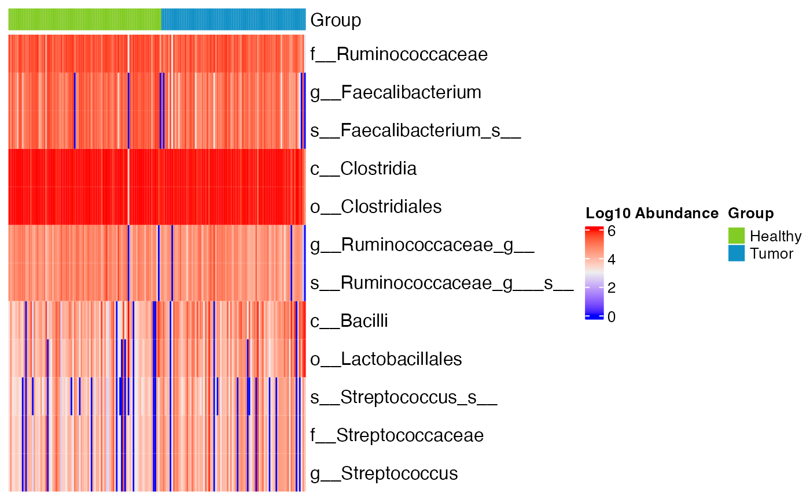

Display the microbiome marker using heatmap, in which rows represents the marker and columns represents the samples.
plot_heatmap(
mm,
transform = c("log10", "log10p", "identity"),
cluster_marker = FALSE,
cluster_sample = FALSE,
markers = NULL,
label_level = 1,
max_label_len = 60,
sample_label = FALSE,
scale_by_row = FALSE,
annotation_col = NULL,
group,
...
)a microbiomeMarker object
transformation to apply, for more details see
transform_abundances():
"identity", return the original data without any transformation.
"log10", the transformation is log10(object), and if the data contains
zeros the transformation is log10(1 + object).
"log10p", the transformation is log10(1 + object).
logical, controls whether to perform
clustering in markers (rows) and samples (cols), default FALSE.
character vector, markers to display, default NULL,
indicating plot all markers.
integer, number of label levels to be displayed, default
1, 0 means display the full name of the feature
integer, maximum number of characters of feature label,
default 60
logical, controls whether to show the sample labels in
the heatmap, default FALSE.
logical, controls whether to scale the heatmap by the
row (marker) values, default FALSE.
assign colors for the top annotation using a named
vector, passed to col in ComplexHeatmap::HeatmapAnnotation().
character, the variable to set the group
extra arguments passed to ComplexHeatmap::Heatmap().
a ComplexHeatmap::Heatmap object.
data(kostic_crc)
kostic_crc_small <- phyloseq::subset_taxa(
kostic_crc,
Phylum %in% c("Firmicutes")
)
mm_lefse <- run_lefse(
kostic_crc_small,
wilcoxon_cutoff = 0.01,
group = "DIAGNOSIS",
kw_cutoff = 0.01,
multigrp_strat = TRUE,
lda_cutoff = 4
)
plot_heatmap(mm_lefse, group = "DIAGNOSIS")
#> Warning: OTU table contains zeroes. Using log10(1 + x) instead.
